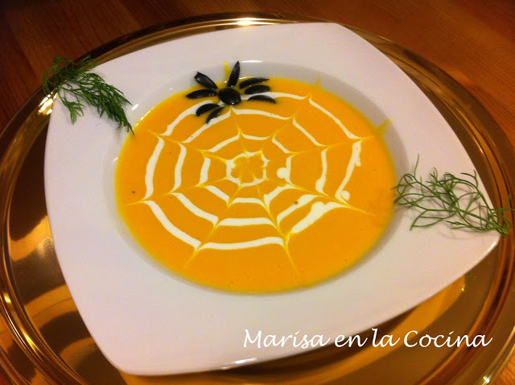

|  |
Ingredientes
|
ELABORACIÓN:--------------------------------------------Paso 1Pela la calabaza y elimina las semillas y los filamentos. Corta la pulpa en dados y ponlos en la placa del horno, con los ajos lavados y sin pelar y las cebolletas limpias y lavadas. Riega con un hilo de aceite y ásalos 30 minutos en el horno precalentado a 200o. Retira y deja templar. --------------------------------------------Paso 2Corta en aros la parte verde más tierna de las cebolletas y resérvalos para decorar. Trocea el resto y pela los ajos. Tritura ambos con la calabaza hasta obtener un puré. Añade el caldo caliente y 1 cucharadita de curry, y cuece 10 minutos. --------------------------------------------Paso 3Tuesta las almendras sin aceite. Retíralas y aderézalas con unas gotas de aceite y una pizca de sal. Sirve la crema caliente espolvoreada con las almendras, los aros de cebolleta reservados y el sésamo. |